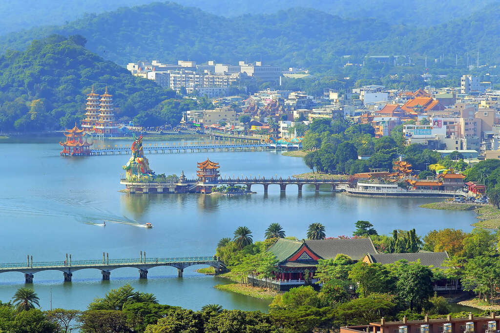

景點介紹
擁有深邃東方寓意的勝境
位於左營區的蓮池潭，南鄰龜山、北倚半屏山，清朝時期因潭中遍植荷花，每逢夏季清香四溢，素有「泮水荷香」美譽，成為清代的鳳山八景之一；蓮池潭畔的指標性建築「龍虎塔」，讓人感受到東方宗教文化的震撼，曾被美國有線電視CNN特別推薦，是高雄市最具傳統宗教色彩的風景區之一。
蓮池潭畔廟宇眾多達20多座，以龍虎塔、春秋閣、北極玄天上帝、孔廟等最知名，其中，龍虎塔最受國際旅客喜愛，是來高雄必訪的熱門景點，CNN曾於2014年刊登「愛上高雄十大理由(10 reasons to love Kaohsiung)」中，特別推薦消災解厄的「蓮池潭龍虎塔」。
龍虎塔（預計 2024 年底完工，2025 年第一季重新開放）
龍虎塔建於1976年，高7層的塔可由龍口進、虎口出，龍塔內壁畫有勸世故事的交趾陶作品，出自名家之手，塔身與九曲橋相銜、相映湖面成美景。據說參觀龍虎塔有規矩，要從龍口進入、虎口出來，意即「入龍喉出虎口」，就能趨吉避凶，登上塔頂即能一覽蓮池潭美景全貌。

春秋閣
與龍虎塔為鄰的春秋閣建於民國42年（西元1953年），矗立在此已經超過一甲子，為兩座中國宮殿式樓閣，一稱「春閣」，另一稱為「秋閣」，為紀念孔子作「春秋」而命名。各為四層八角、綠瓦黃牆，宛如寶塔，古色古香的塔影倒映水中，並與九曲橋相互連結，為紀念武聖關公而建，造型為當時全臺灣塔中之翹楚，又稱「春秋御閣」。春秋御閣設有一座龍形隧道，與龍虎塔相似，旅客同樣可以依循著指引走進龍口，進入後的隧道繪有五彩繽紛的彩繪，訴說著許多宗教故事，繪製的細節非常豐富，許多人帶著虔誠的心來走訪並欣賞牆上的精緻畫風。位在春秋閣的前端有一尊騎龍觀音，關於此一騎龍觀音的由來有一傳說：觀音菩薩曾騎龍在雲端現身，指示信徒要依其現身之形態建造聖像在春閣與秋閣之間，於是有現今的騎龍觀音聖像。

五里亭
五里亭源於「五里霧」，李商隱詩：「五里無因霧」，按照世間說法，處於迷離之境者曰五里霧。「五里亭」亭子高度約兩層樓，飛簷黃瓦，明豔奪目。當早晨晨曦初露，蓮池潭瀰漫著煙波時，五里亭就會宛如罩上一層薄霧，看起來就像浮在潭面的仙殿。而當夜幕降臨時，堤岸突出的漫長宮燈，會散發出柔和燈光，也猶如世外仙境。若是循著「五里亭」的樓梯登上二樓，就可以眺望整個蓮池潭，景色充滿東方情調，也展露江南林園樓台之美。

孔廟
左營蓮池潭旁的孔廟規模為全臺最大，仿中國北方宮殿式建築，並參考山東曲阜孔廟形態，建築外觀建築宏偉堂皇，包括大成殿、大成門、東西廡、崇聖祠、櫺星門、禮門與義路坊、明倫堂與泮宮坊、萬仞宮牆、泮池與拱橋等，建置完備。
早在西元1684年，即由知縣楊芳聲建有聖廟，後來因風雨損壞，於乾隆及光緒年間皆有修建，才形成現今完整規模。每年9月28日教師節有祭孔大典。
蓮池潭兒童公園
蓮池潭兒童公園是高雄知名的親子景點，一改過往千篇一律的組合式遊具，蓮池潭兒童公園設立了多樣化且具地方特色的遊具，為高雄第一座共榮式公園。繽紛的彩虹山丘，集結了傳聲筒、管隧道、攀岩等元素，讓小孩盡情探索；化身蜘蛛人，在沙坑區的繩索攀爬架訓練協調力；近期更新增了長達30公尺的滑索道，並設有鳥巢鞦韆、平衡木等設施，是親子同樂共學的好去處。
在蓮池潭畔享受慢活生活的美感
蓮池潭畔因亭台樓閣、巨大神像和城牆的環繞，滿溢「舊城」氛圍，古蹟名勝、古厝、眷村等聚落帶出濃厚的生活氣息，走進老街與傳統市集更能以舌尖探索左營豐富精采的好滋味！蓮池潭風景絕美，更有多項水上活動供熱愛刺激感的遊客過過癮。環潭步道不僅能夠滿足散步者靜賞潭面風光的體驗，更是能滿足自行車車友踩著踏板，以不同節奏穿梭其中的快意。
蓮潭滑水主題樂園
全台首座國際標準的纜繩滑水場–「蓮潭滑水主題樂園」，自民國103年開幕以來，吸引超過破百萬人次的觀光人潮，搭配不定期舉辦國際邀請賽，吸引來自不同國家的遊客前來，比賽期間透過媒體轉播，用運動觀光的角度再創觀光高峰，讓更多人認識不一樣的高雄。
泮咖啡
「泮咖啡」(PAMMA Coffee)位於蓮池潭元帝廟旁，融合環境生態，明亮純白建築，欣賞著典雅水畔景色，內有提供輕食飲品，品嚐咖啡美食之餘可飽覽蓮池潭美景，為本市著名蓮池潭風景區吸引國內外遊客旅遊打卡新景點。
芒果咖秋
誰說下午茶只能在咖啡廳甜點店吃？來高雄左營孔廟喝杯咖啡吃吃下午茶吧！坐落在孔廟裡的芒果咖秋，有百元初的好喝咖啡飲品，有傳統糕點下午茶，在古色古香的氣氛中，讓你徹底體驗一個不一樣的中國風咖啡下午茶！
城邑左營慈濟宮
城邑左營慈濟宮，簡稱城邑慈濟宮、左營慈濟宮，當地人俗稱老祖廟，主祀保生大帝。建於清康熙58年(西元1719年)，至今已有將近300年的歷史，雖然經歷多次重修，已與舊貌不同，但保留下來的匾額、對聯、石牌仍可感受當時樸式卻安慰人們的力量。
中外餅舖
傳承百年的中外餅舖，從傳統糕餅製造批發起家，歷經世代傳承與創新開發，早已是高雄著名的特產伴手禮店家。如今結合7-11拓展通路，共同打造蓮潭特色糕點。